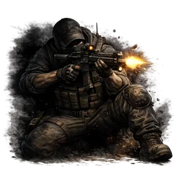
Засада
Первая атака по врагу, который ещё не заметил вас, наносит на 50–150% больше урона и всегда критическая.
<AI> Базовые -> Мастерство -> Комбо I..IV. Для навыка Комбо требуются ВСЕ перечисленные условия на максимальном уровне.

Первая атака по врагу, который ещё не заметил вас, наносит на 50–150% больше урона и всегда критическая.
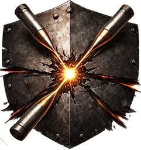
Попадания снижают защиту цели на 10–60% на 3 сек. Эффект помогает пробивать крепких врагов, но не суммируется.
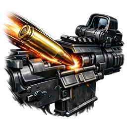
Попадания из штурмовых винтовок имеют 10–25% шанс вернуть 1 патрон в магазин, поддерживая длинные очереди.
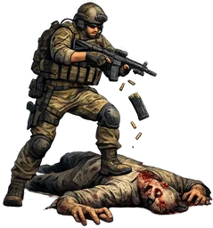
После убийства врага перезарядка ускоряется на 40–120% на 2–4 сек., помогая продолжать бой без паузы.
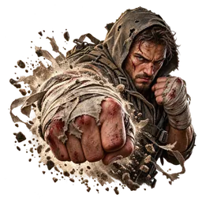
Удары кулаками и кастетами наносят на 20–60% больше урона, а каждый 3-й удар серии оглушает врага на 0.4–1 сек. На 6-м уровне удары тратят вдвое меньше выносливости.
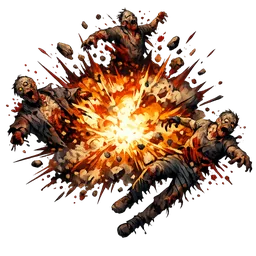
При смерти враг имеет 5–15% шанс взорваться и нанести 30–90% урона ближайшим врагам в радиусе 2.5 м.
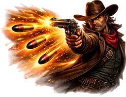
Каждый 6–4 выстрел из пистолета наносит на 35–70% больше урона, усиливая ритмичную стрельбу.
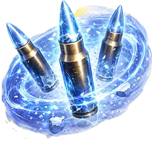
Попадания замедляют цель на 10–30% на 1.5–2 сек. Эффект не суммируется. На 6-м уровне каждое 3-е попадание по одной цели замораживает её на 1 сек.
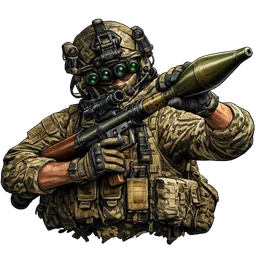
Гранатомёты перезаряжаются на 15–45% быстрее, а радиус их взрывов больше на 10–30%.
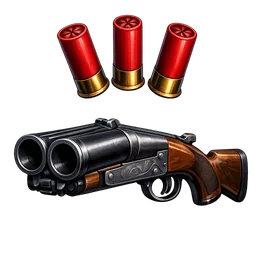
Выстрелы из дробовиков имеют 8–20% шанс не потратить патрон, продлевая бой без перезарядки.
Удар ближнего боя мгновенно добивает обычного врага (не босса и не мини-босса), если у него осталось 8–20% здоровья или меньше.
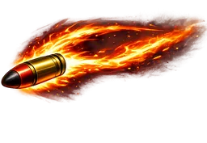
На низких уровнях каждое 8-е попадание, а на высоких — каждое 5-е, поджигает цель на 4 сек и наносит 20–50% дополнительного огненного урона.
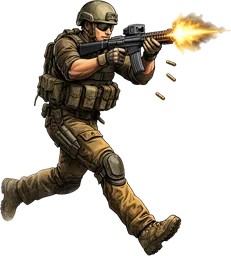
Разброс штурмовых винтовок снижается на 12–30%, делая очереди точнее на средней дистанции.
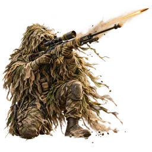
Попадания из оружия по целям дальше 12 м наносят на 10–30% больше урона.
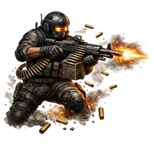
Пулемёты перезаряжаются на 10–25% быстрее и получают на 10–30% меньше разброса.
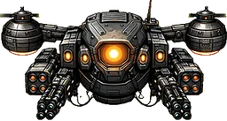
После убийства врага оружием следующее атакующее пси-умение в течение 5 сек наносит на 15–40% больше урона.
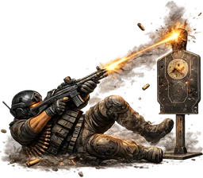
После переката в течение 2 сек все атаки оружием и в ближнем бою наносят на 15–40% больше урона.
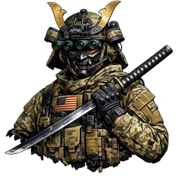
Скорость атак ближнего боя повышается на 10–30%, усиливая агрессивный стиль с оружием в руках.
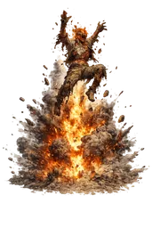
Взрывы гранатомётов отбрасывают врагов на 1-2.5 м.
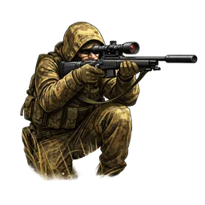
Первый выстрел после перезарядки точнее на 40–100% и наносит на 25–60% больше урона. На 6-м уровне этот выстрел всегда критический.
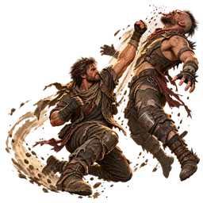
После переката первый удар кулаком или кастетом в течение 1.5 сек наносит на 50–100% больше урона и отбрасывает врага на 1–2 м.
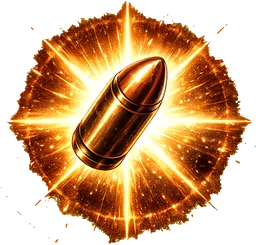
Каждое попадание накладывает на цель заряд подавления. На 5-м заряде цель оглушается на 0.6–1.2 сек и отбрасывается. Одну цель можно оглушить не чаще раза в 4 сек.
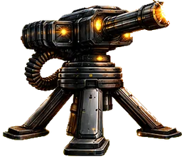
Если вы стоите на месте хотя бы 0.75 сек, оружие наносит на 8–24% больше урона. Бонус сохраняется ещё 2 сек после начала движения.
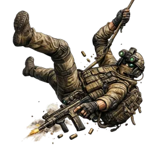
Расход выносливости на перекаты и прыжки снижается на 8–20%, помогая чаще менять позицию.
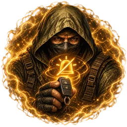
Снижает шанс срабатывания автомобильной сигнализации на 15–90%.
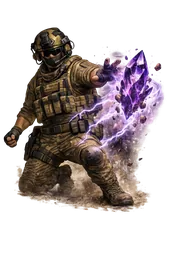
Радиус сбора кристаллов увеличивается на 20–120%, упрощая подбор добычи в бою.
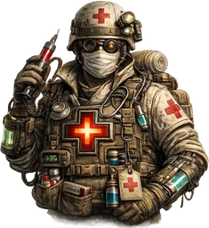
Аптечки и другие эффекты лечения восстанавливают на 10–22% больше здоровья, повышая ценность медицины.
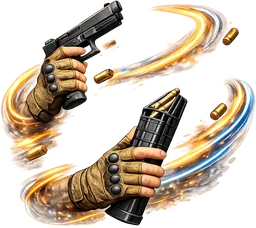
Перезарядка оружия ускоряется на 8–20%, уменьшая опасные паузы в бою.
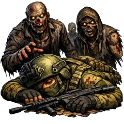
Смертельный урон не убивает вас: вы остаётесь с 4–14% здоровья и 10 сек лежите, а враги теряют к вам интерес. Перезарядка 900–360 сек.
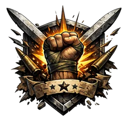
Когда здоровье падает ниже 35–50%, входящий урон снижается на 10–22%.
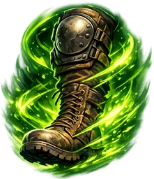
Расход выносливости снижается на 8–20%, а восстановление ускоряется на 10–22%.
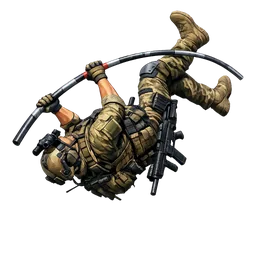
Высота прыжка увеличивается на 15–45%, открывая больше вариантов для обхода и позиционирования.
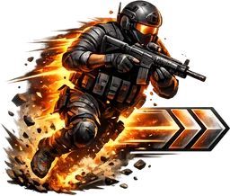
Скорость ходьбы повышается на 6–18%, а скорость движения при прицеливании — на 4–10%.
Ускоряет восстановление пси-энергии на 12–30% и сокращает задержку перед началом регенерации на 10–22%.
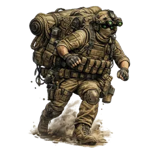
Переносимый груз увеличивается на 5–30 кг, позволяя забирать больше ресурсов из вылазки.
После использования пси-умения есть 12–30% шанс мгновенно вернуть 25% от максимального значения пси-энергии.
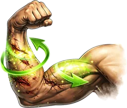
Пассивно восстанавливает 0.4–1 здоровья в сек. После получения урона регенерация снова включается через 10–5 сек.
Чутьё отмечает забытые припасы на мини-карте в радиусе 25–100% от её видимого радиуса. Потайные схроны остаются скрытыми.
Когда выносливость падает ниже 10%, мгновенно восстанавливается 50% выносливости. Перезарядка 60–30 сек. На 6-м уровне следующие 2 сек перекаты не тратят выносливость.
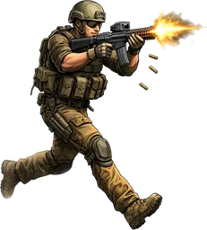
Во время стрельбы скорость движения выше на 8–20%, при прицеливании — на 4–10%, а штраф к точности на ходу ниже на 10–22%.
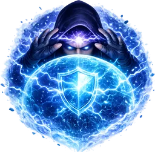
После получения урона следующее пси-умение стоит на 10–40% меньше, помогая ответить под давлением.
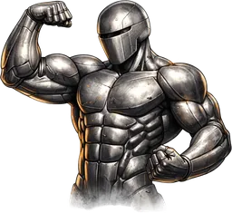
Входящий урон снижается на 4–10%, повышая живучесть в затяжных боях.
Использование расходника имеет 10–22% шанс не потратить предмет.
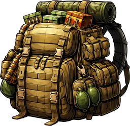
Кристаллы дают на 10–30% больше опыта, ускоряя развитие персонажа.
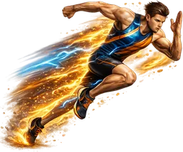
Скорость бега повышается на 5–12%, что помогает быстрее менять позицию и уходить от угроз.
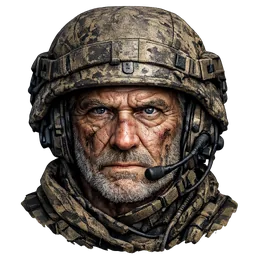
Каждая изученная базовая способность категории «Атака» увеличивает урон оружием и в ближнем бою на 2–5%.
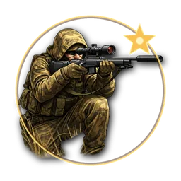
Немного снижает разброс оружия.
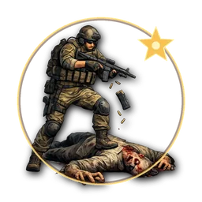
Немного повышает скорость атак оружием и в ближнем бою.
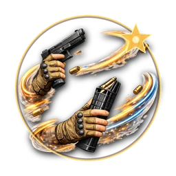
Немного ускоряет перезарядку любого оружия.
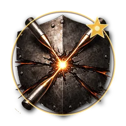
Немного повышает весь наносимый урон.
Немного повышает восстановление выносливости.
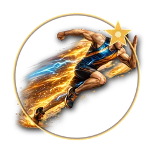
Немного повышает скорость движения.
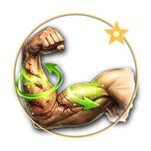
Постепенно добавляет слабую пассивную регенерацию здоровья.
Немного снижает входящий урон.
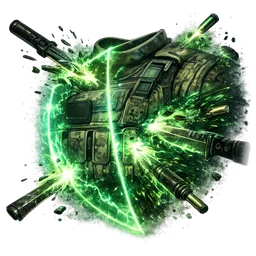
Входящий урон снижается на 15%, помогая переживать тяжёлые прямые попадания.
Стальное тело, Твердость духа, Второе дыхание, Притвориться мертвым
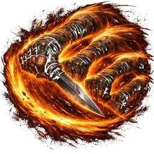
Скорость атак ближнего боя повышается на 30%, если нужно быстро добить цель в упор.
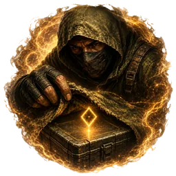
Замечает потайные схроны и отмечает их золотым ромбом на мини-карте в радиусе 50% от её видимого радиуса. За пределами радиуса метка исчезает. До схрона нужно добраться и обыскать его.
Перезарядка ускоряется на 30%, снижая время уязвимости между очередями.
Штурмовые винтовки наносят на 35% больше критического урона.
После перезарядки дробовика следующий выстрел в течение 3 сек. наносит на 45% больше урона.
Пси-энергия восстанавливается на 40% быстрее, позволяя чаще применять способности.
Максимальная пси-энергия увеличивается на 50 ед., расширяя запас для серии способностей.
Перекат имеет 20% шанс восстановить 10 здоровья, помогая выживать при активном уклонении.
Пси-умения наносят на 25% больше урона, усиливая атакующие способности персонажа.
После переключения на пистолет следующий выстрел в течение 3 сек. наносит на 45% больше урона.
Здоровье, выносливость и пси-энергия восстанавливаются в 2 раза быстрее, повышая устойчивость в затяжной вылазке.
Пистолеты-пулемёты стреляют на 30% быстрее, усиливая урон на ближней дистанции.
Стрельба в движении, Сдерживающий огонь, Быстрые руки, Легкоатлет
Максимальная выносливость увеличивается на 50 ед., позволяя дольше бежать, уклоняться и сражаться.
Переносимый груз увеличивается на 40 кг, позволяя приносить из вылазки больше добычи.
Максимальное здоровье увеличивается на 50 ед., повышая шанс пережить ошибку или внезапную атаку.
Удары кулаками и кастетами наносят на 200% больше урона, а пока вы деретесь врукопашную, входящий урон снижен на 50%.
Режущее оружие получает +25% к скорости атаки и +25% к урону.
Дробящее оружие получает +25% к скорости атаки и +25% к урону.
Удар кулаком или кастетом по оглушённому обычному врагу (не боссу и не мини-боссу) с 25% здоровья или меньше мгновенно его добивает.
Раз в 10 минут при получении смертельного урона есть 35% шанс вместо смерти восстановить 40% от максимального здоровья и стать неуязвимым на 3 сек.
Твердость духа, Второе дыхание, Притвориться мертвым, Доктор
Шанс критического удара повышается на 4%, усиливая точечный урон.
Пулемёты имеют 12% шанс не потратить патрон, повышая эффективность длинных очередей.
При атаке оружием ближнего боя есть 10% шанс нанести круговой удар на 80% урона в радиусе 2.5 м.
Атаки оружием ближнего боя имеют 10% шанс восстановить 5% максимального здоровья, поощряя рискованный ближний бой.
Выстрел из гранатомёта имеет 20% шанс нанести на 120% больше урона, делая редкие залпы особенно опасными.
Во время применения пси-умения входящий урон снижается на 50%, а здоровье не опускается ниже 1 до завершения способности.